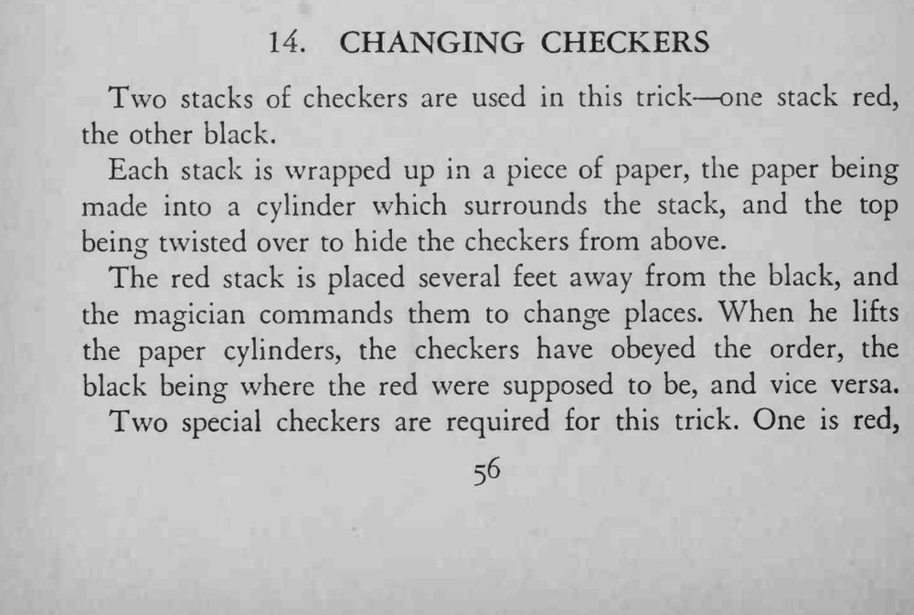
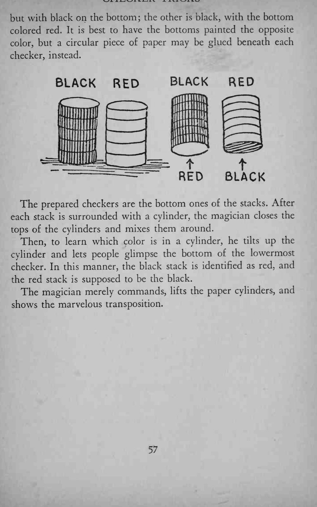
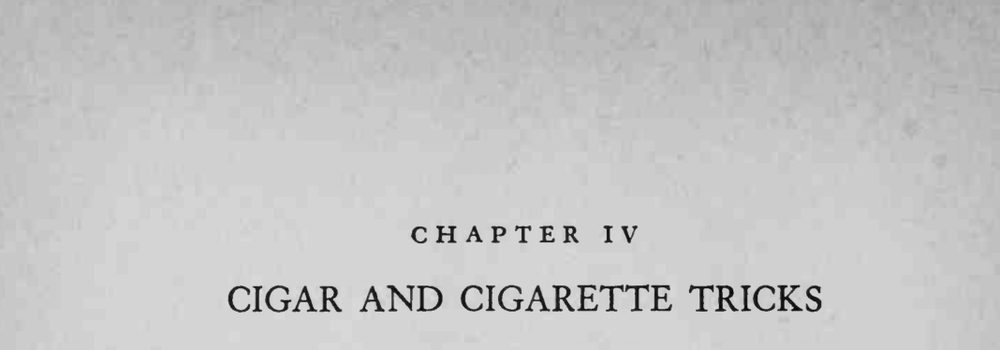

红、黑两叠棋子各用纸筒罩住，相隔数尺放好；魔术师一声令下，掀起纸筒，两叠棋子的位置竟然互换了。
特制棋子的底面颜色要涂得像真棋子；歪筒亮底的那一下要快而自然。



Two stacks of checkers are used in this trick one stack red, the other black. Each stack is wrapped up in a piece of paper, the paper being made into a cylinder which surrounds the stack, and the top being twisted over to hide the checkers from above. The red stack is placed several feet away from the black, and the magician commands them to change places. When he lifts the paper cylinders, the checkers have obeyed the order, the black being where the red were supposed to be, and vice versa. Two special checkers are required for this trick. One is red, but with black on the bottom; the other is black, with the bottom colored red. It is best to have the bottoms painted the opposite color, but a circular piece of paper may be glued beneath each checker, instead. The prepared checkers are the bottom ones of the stacks. After each stack is surrounded with a cylinder, the magician closes the tops of the cylinders and mixes them around. Then, to learn which color is in a cylinder, he tilts up the cylinder and lets people glimpse the bottom of the lowermost checker. In this manner, the black stack is identified as red, and the red stack is supposed to be the black. The magician merely commands, lifts the paper cylinders, and shows the marvelous transposition.